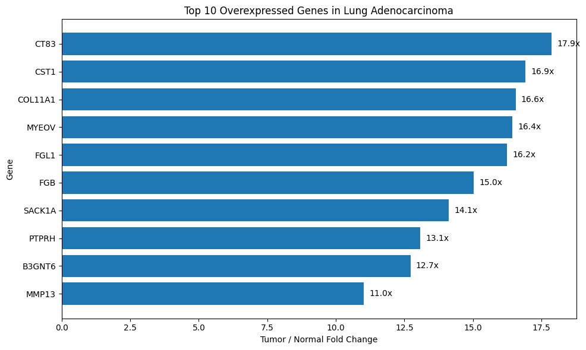
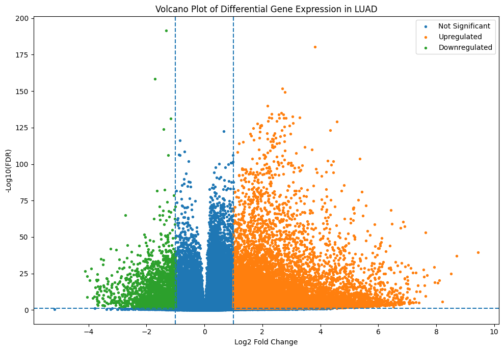
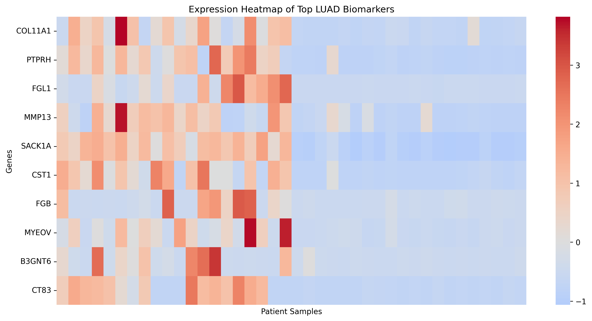
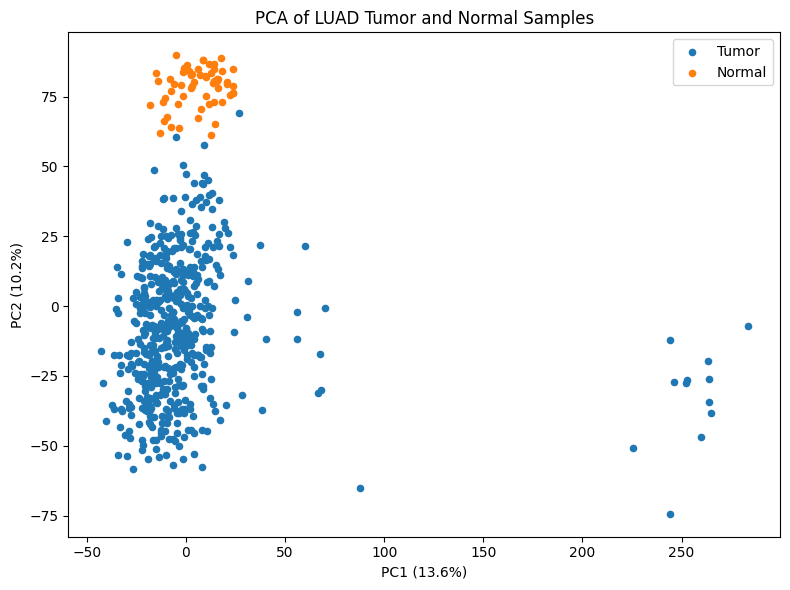
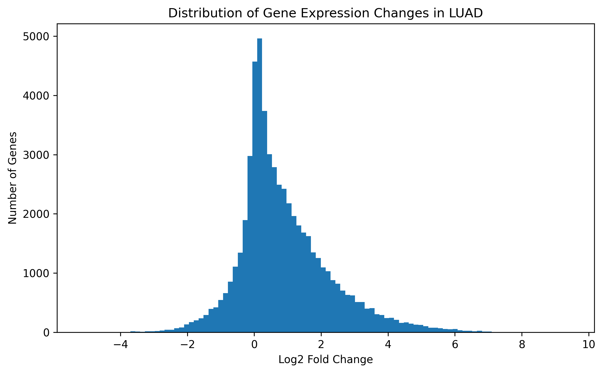

Project Overview
Lung adenocarcinoma (LUAD) is one of the most common forms of lung cancer. Cancer cells often have different patterns of gene activity compared with healthy cells. Studying these differences can help researchers understand how tumors develop.
In this project, I analyzed RNA sequencing data from The Cancer Genome Atlas (TCGA) to compare gene expression between LUAD tumor samples and normal lung samples. The goal was to identify genes that showed large differences in activity and determine whether those differences were statistically significant.
The analysis was completed using Python. I processed the dataset, performed statistical testing, applied FDR correction, and created visualizations to examine patterns in gene expression.
Dataset
The data used in this project came from the UCSC Xena Browser using the TCGA-LUAD RNA sequencing dataset.
The dataset contained 594 samples used in this analysis:
- 535 LUAD tumor samples
- 59 normal lung samples
Each sample contained expression measurements for approximately 60,600 genes. RNA sequencing measures how much RNA is produced from each gene, which gives an estimate of how active that gene is in a sample.
The expression values were reported as log2(FPKM+1). The log transformation reduces the effect of extremely large values and makes differences between samples easier to compare.
Because tumor samples greatly outnumbered normal samples, statistical testing was used to determine whether differences were likely caused by real biological changes instead of random variation.
Methods
The analysis was completed in Python using data analysis and bioinformatics libraries. The workflow included organizing the dataset, comparing tumor and normal samples, performing statistical testing, correcting for multiple testing, and creating visualizations.
First, the samples were separated into two groups: LUAD tumor samples and normal lung samples. For each gene, the average expression level was calculated for both groups to compare differences in gene activity.
The difference in expression between tumor and normal samples was measured using log2 fold change. Positive values represented genes with higher expression in tumor samples, while negative values represented genes with lower expression.
To test whether the differences were statistically significant, a two-sample Welch's t-test was performed for each gene. Welch's t-test was used because the tumor and normal groups had different sample sizes and may have different levels of variation.
Because thousands of genes were tested at the same time, the Benjamini-Hochberg False Discovery Rate (FDR) correction was applied. This reduces the chance of identifying genes as significant by random chance.
Genes were considered statistically significant when they had an adjusted p-value (FDR) below 0.05. Significant genes were ranked based on their log2 fold change and statistical significance to identify genes with the strongest differences between LUAD tumor and normal samples.
The final results were displayed using graphs showing expression changes, statistical significance, sample differences, and expression patterns of selected genes.
Important Genes Identified
After completing the statistical analysis, six genes were selected because they showed some of the strongest expression differences between LUAD tumor and normal samples.
The values below come directly from my analysis. Log2 fold change shows the size of the expression difference, fold change shows the difference on a regular scale, and FDR shows the adjusted statistical significance after correcting for thousands of tests.
LCAL1
LCAL1 showed the largest fold change among the selected genes, with about 44.4 times higher expression in LUAD tumor samples compared with normal lung samples.
My analysis found a log2 fold change of 5.47 and an FDR of 1.04 × 10⁻⁸¹, showing a very strong statistical difference between tumor and normal samples.
LCAL1 is a long non-coding RNA, meaning it does not produce a protein but may influence how other genes are regulated. Previous research has connected LCAL1 with cancer-related processes, making its strong increase in this dataset an interesting finding.
MAGEA3
MAGEA3 showed one of the strongest increases in expression between LUAD tumor and normal samples.
The analysis found a log2 fold change of 5.45, a fold change of 43.84, and an FDR of 4.48 × 10⁻²⁹.
MAGEA3 belongs to a group of genes called cancer-testis antigens. These genes are usually inactive in most normal tissues but can become active in certain cancers. Because of this pattern, MAGEA3 has been studied as a possible target for cancer treatments.
PRAME
PRAME showed a large difference between LUAD tumor and normal samples and was one of the strongest genes identified.
PRAME had a log2 fold change of 5.16, a fold change of 35.66, and an FDR of 4.62 × 10⁻⁶².
PRAME has been studied in several cancers because of its connection with tumor-related processes and changes in cell growth regulation. Its strong increase in LUAD samples matched patterns reported in previous research.
FEZF1-AS1
FEZF1-AS1 was another highly increased gene in LUAD tumor samples.
The analysis found a log2 fold change of 4.76, a fold change of 27.13, and an FDR of 2.50 × 10⁻⁸².
FEZF1-AS1 is a long non-coding RNA that has been connected with cancer-related pathways. Its strong difference between tumor and normal samples made it one of the important genes identified from the dataset.
HOXB9
HOXB9 showed a strong increase in expression in LUAD tumor samples compared with normal lung tissue.
The analysis found a log2 fold change of 4.60, a fold change of 24.33, and an FDR of 4.44 × 10⁻³⁸.
HOXB9 is part of the HOX family of genes, which help regulate development and cell behavior. Previous research has connected changes in HOXB9 expression with tumor growth and cancer progression.
AFAP1-AS1
AFAP1-AS1 showed one of the strongest statistical signals in the entire analysis.
The gene had a log2 fold change of 4.59, a fold change of 24.03, and an FDR of 6.31 × 10⁻¹³⁰.
AFAP1-AS1 is a long non-coding RNA that has been studied for its possible role in processes such as cell movement and tumor development.
Analysis Results
The analysis identified many genes that showed different expression levels between LUAD tumor samples and normal lung samples. The graphs below show the main patterns found after statistical testing and comparison of gene expression.
Top Overexpressed Genes

This graph shows genes with the largest increases in expression in LUAD tumor samples compared with normal lung samples. Several of the strongest genes identified in the analysis, including LCAL1, MAGEA3, and PRAME, showed large expression differences.
Volcano Plot

The volcano plot compares the size of gene expression changes with statistical significance. Genes farther to the left or right had larger expression differences, while genes higher on the graph had stronger statistical evidence. Many genes showed significant changes after FDR correction.
Expression Heatmap

The heatmap shows expression patterns of selected genes across individual samples. The selected genes generally showed higher expression patterns in LUAD tumor samples compared with normal samples, supporting the differences found in the statistical analysis.
PCA Plot

The PCA plot shows how samples group based on their overall gene expression patterns. Tumor and normal samples formed different groups, suggesting that LUAD samples have distinct gene expression profiles compared with normal lung tissue.
Gene Expression Distribution

The distribution graph shows the range of expression changes across all analyzed genes. Most genes had smaller changes, while a smaller number showed very large increases or decreases in expression.
Discussion
This analysis identified several genes that showed strong differences between LUAD tumor samples and normal lung samples. The selected genes were chosen because they had large expression changes and strong statistical evidence after testing thousands of genes.
The strongest expression increases were found in genes such as LCAL1, MAGEA3, PRAME, FEZF1-AS1, HOXB9, and AFAP1-AS1. For example, LCAL1 showed the largest fold change among the selected genes with approximately a 44.4-fold increase in tumor samples, while MAGEA3 showed a similarly strong increase of approximately 43.8-fold. These large differences suggest that these genes may have important connections with LUAD biology.
Several of the identified genes have also been studied in previous cancer research. MAGEA3 and PRAME have been investigated because of their connection with cancer-related activity, while genes such as AFAP1-AS1 and FEZF1-AS1 have been studied for their possible roles in tumor development and regulation.
Although these results show strong differences in gene expression, this analysis only shows an association between gene activity and LUAD. Additional experiments would be needed to determine whether these genes directly affect cancer development.
Limitations
This project analyzed one publicly available dataset from TCGA. While TCGA provides a large number of samples, testing the identified genes in additional LUAD datasets would help determine whether the same patterns appear consistently.
The analysis focused only on gene expression. Cancer is affected by many other factors, including DNA mutations, protein activity, and interactions between cells. Including additional types of biological data could provide a more complete understanding of these genes.
The results identify genes that are associated with LUAD, but further laboratory research would be needed to understand their exact biological functions.
Conclusion
This project used bioinformatics methods to analyze gene expression differences between LUAD tumor samples and normal lung samples.
Using Python, statistical testing, and data visualization, I identified genes with significant differences in expression between the two groups. Six genes stood out because they showed large expression changes and strong statistical evidence after FDR correction.
The results demonstrate how computational approaches can be used to analyze large biological datasets and identify patterns that may help researchers better understand cancer biology.
References
- The Cancer Genome Atlas Program. National Cancer Institute. https://www.cancer.gov/ccg/research/genome-sequencing/tcga
- Goldman, Mary J., et al. "Visualizing and Interpreting Cancer Genomics Data via the Xena Platform." Nature Biotechnology, 2020. https://doi.org/10.1038/s41587-020-0546-8
- "Cancer Testis Antigen MAGEA3 in Serum and Serum-Derived Exosomes Serves as a Promising Biomarker in Lung Adenocarcinoma." Journal of Thoracic Disease, 2024.
- "DNA Hypomethylation-Activated PRAME Drives Early-Stage Lung Adenocarcinoma Recurrence." Cell Death Discovery, 2025.
- "Down-Regulation of Long Non-Coding RNA AFAP1-AS1 Inhibits Tumor Cell Growth and Invasion in Lung Adenocarcinoma." Cellular Physiology and Biochemistry, 2017.
- "WNT/TCF Signaling through LEF1 and HOXB9 Mediates Lung Adenocarcinoma Metastasis." Cell, 2009.
- "lncRNA FEZF1-AS1 Is Associated With Prognosis in Lung Adenocarcinoma." Oncology Letters, 2018.
- LCAL1 cancer research. PubMed.